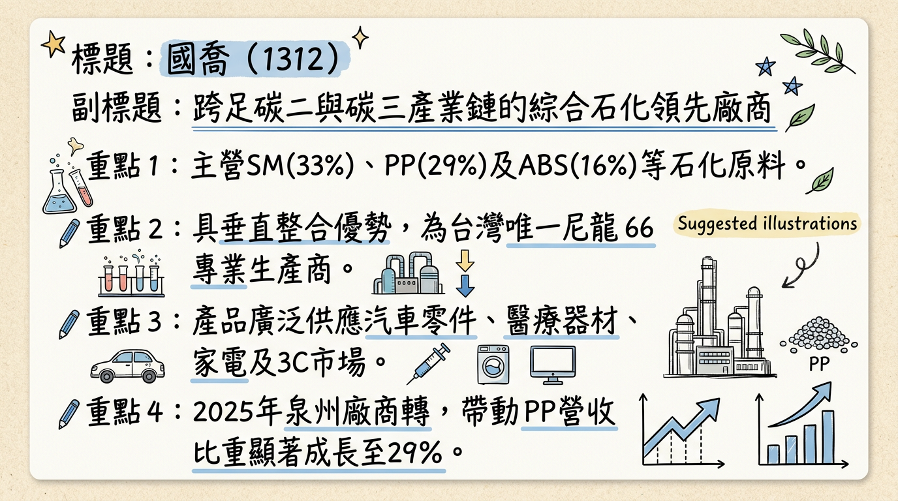
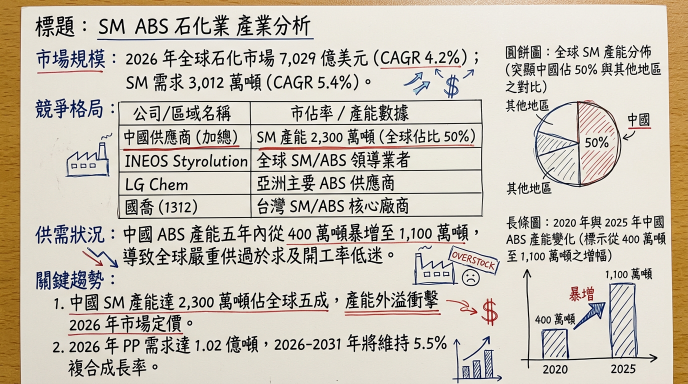
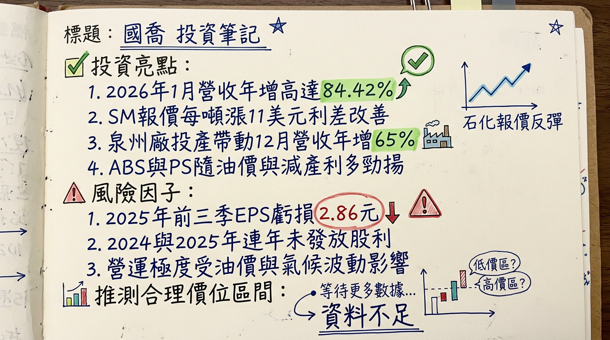

1312 國喬 深度研究報告
一句話摘要
「營收爆發與利潤谷底的拉鋸戰」：國喬憑藉泉州廠產能開出實現營收倍增，惟受制於全球石化產能過剩與高額折舊，2026 年將是「去中化」轉型與毛利保衛戰的關鍵轉折期。
公司概覽
國喬（1312）為台灣苯乙烯（SM）大廠，近年積極從單一 SM 生產商轉型為跨足「碳二（乙烯）與碳三（丙烯）」產業鏈的綜合石化集團。2025 年福建泉州國亨廠投產後，公司正式具備 PDH 與 PP 生產能力。
2025 前三季營收結構表格
| 產品線 | 營收佔比 | 應用領域 |
|---|
| 苯乙烯 (SM) | 33% | ABS、PS 樹脂原料 |
| 泉州廠產品 (PDH/PP) | 29% | 汽車零件、醫療器材、食品容器 |
| ABS / PS 樹脂 | 16% | 家電、3C 外殼、汽車零組件 |
| 尼龍 66 (PA66) | 4% | 台灣唯一生產商，高階電子、束帶、EV 配件 |
| 其他 (碳黑、媒體等) | 18% | 轉投資與其他石化副產品 |
核心競爭優勢
垂直整合產線： 擁有從原料到下游 ABS/PS 的整合優勢，泉州廠引進美國 UOP 的 PDH 與 LyondellBasell 的 PP 技術，具備高效率與低能耗優勢。
市場去中化策略： 成功將中國營收佔比從 70% 降至 35%，並深耕東南亞（38%）與南亞（30%）市場，避開中國內需低迷風險。
高值化產品布局： 具備台灣唯一的尼龍 66 生產線，並開發電動車電池外殼耐熱 ABS，切入高利潤 EV 供應鏈。
財務分析
近 6 個月月營收趨勢表
| 月份 | 營收金額 (億元) | 月增率 (MoM) | 年增率 (YoY) | 備註 |
|---|
| 2026/01 | 23.22 | -1.48% | +84.42% | 泉州廠產能持續開出 |
| 2025/12 | 23.57 | +12.80% | +64.75% | 產能利用率趨穩 |
| 2025/11 | 20.89 | -8.26% | +58.54% | - |
| 2025/10 | 22.78 | +7.87% | +117.80% | 基期效應顯著 |
| 2025/09 | 21.11 | +67.78% | +75.95% | - |
| 2025/08 | 12.58 | -15.95% | -16.45% | 投產初期波動 |
- 2024 年度： 營收約 164 億元，EPS -1.42 元。
- 2025 年度（預估）： 營收 227.08 億元（年增 38.3%），EPS 預估為 -3.5 至 -4.1 元。
- 2025 Q3 單季： 營收約 54.5 億元，EPS -1.33 元。
法說會重點（2025/11/25）
管理層 Guidance： 石化業目前處於「虧損戰場」，主要受中國 230 萬噸 SM 新產能投放壓抑。
產能利用率： SM 約 70-80%，ABS 僅約 65-70%（受供過於求影響）。
獲利拐點： 預期 2026 下半年利差才有望改善，2027 年目標接近損益兩平。
資本支出： 短期無大規模擴產計畫，重點轉向 AI 營運優化與特種 PP 研發。
券商觀點
券商目標價與評等表
| 券商名稱 | 評等 | 目標價 | 報告日期 | 2026 EPS 預估 |
|---|
| 永豐金證券 | 中性 | ⚠️未提供 | 2026/02/09 | -1.50 元 |
| CMoney | ⚠️過時 (持有) | 11.5 元 | 2025/11/15 | -1.25 元 |
| 第一金證券 | ⚠️過時 (中性) | 10.8 元 | 2025/11/26 | -1.10 元 |
財報深度分析
利潤率趨勢表格
| 季度 | 毛利率 (%) | 營業利益率 (%) | EPS (元) |
|---|
| 2025 Q3 | -13.92 | -25.54 | -1.33 |
| 2025 Q2 | -7.32 | -19.54 | -0.91 |
| 2025 Q1 | -2.31 | -12.70 | -0.62 |
| 2024 Q4 | 2.76 | -17.23 | -0.45 |
- 存貨週轉天數： 2025 Q3 為 49.75 天（略升，因泉州廠備料增加）。
- 負債比率： 截至 2025 Q3 升至 49.76%，財務壓力隨新廠折舊與利息支出攀升。
- 資本支出： 2025 年後重大支出放緩，2026 年進入折舊高峰。
股權異動
- 董監持股： 6.41%（2026/01 數據）。
- ⚠️ 高質押風險： 董監股票質押比例高達 45.85%，需警惕股價下行引發的資金鏈風險。
- 股利政策： 2025 年配發 0 元；預期 2026 年因持續虧損，配發機率低。
產業分析
全球與台灣競爭對手比較表
| 公司名稱 | 地位/產品 | 2025 毛利率 (前三季) | 核心優勢 |
|---|
| 國喬 (1312) | 台灣 SM 大廠 | -8% | 跨足 C3 鏈、PA66 獨佔 |
| 台化 (1326) | 龍頭綜合石化 | 4.36% (Q3) | 垂直整合規模極大 |
| 台苯 (1310) | 純 SM 生產商 | -6% (H1) | 專注 SM 報價波動 |
| LG Chem | 全球 ABS 龍頭 | 正值 | 高階車用材料技術領先 |
| INEOS | 全球苯乙烯龍頭 | 正值 | 全球佈局與回收技術 |
近期催化劑
- 【利多】 遠東區 SM 報價受美國暴風雪減產影響，2026/02 每噸反彈約 11 美元。
- 【利多】 2026/01 營收年增 84.42%，展現泉州廠量能挹注。
- 【利空】 中國 1,100 萬噸 ABS 產能外溢，利差回升速度緩慢。
- 【利空】 2026 年台灣開徵碳費，對石化業增加營運成本壓力。
⭐ 成長動能時間軸
- 2025 / 03： 泉州國亨廠正式商轉（PDH 66萬噸/PP 45萬噸），開啟營收高速增長。
- 2025 / 11： 市場分散策略見效，東南亞與南亞銷售佔比首度突破 50%。
- 2026 / Q1： 啟動高階材料認證（EV 電池外殼耐熱 ABS、半導體封裝材料）。
- 2026 / H2： 預期全球石化補庫存需求啟動，SM 與 PP 利差有望從谷底爬升。
- 2027 / 全年： 目標透過特種 PP 佔比提升與成本優化，達成單季損益兩平。
2026 展望
- 成長動能： 營收將維持高位（220-250 億區間），主因泉州廠完整年度貢獻與去中化策略分散地區風險。
- 關鍵風險： 1. 產能過剩導致毛利持續為負；2. 負債比接近 50% 且董監質押高，財務結構脆弱。
投資結論
營收大增不等於獲利： 國喬正處於「有量無利」的轉型痛點，投資人應觀察「營業毛利」何時由負轉正。
關注利差反彈： SM-苯利差、PP-丙烯利差是短期股價催化劑，2 月份報價反彈有助於短線信心。
財務槓桿警示： 董監高質押與負債比攀升，建議避開財務槓桿過高時期，待 2026 下半年景氣能見度清晰後再行布局。
目標價區間建議： 基於 2026 年虧損收斂預期，給予 0.7x - 0.8x P/B 評價，參考區間為 10.5 - 12.0 元；若跌破 9.5 元需嚴格執行停損。
本報告由 AI 自動產生，資料來源為公開網路資訊，僅供參考，不構成投資建議。產生時間：2026-03-01 04:21
📊 資訊卡


